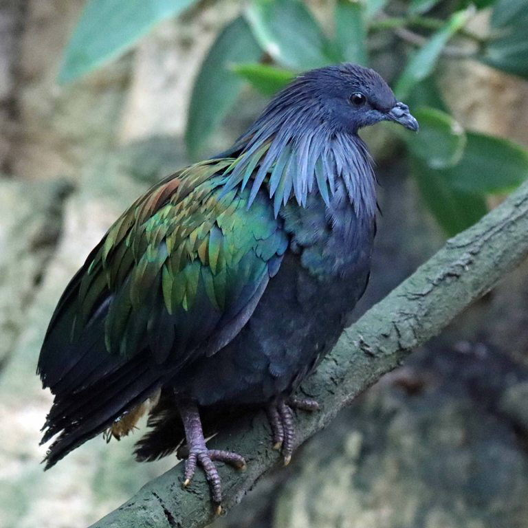
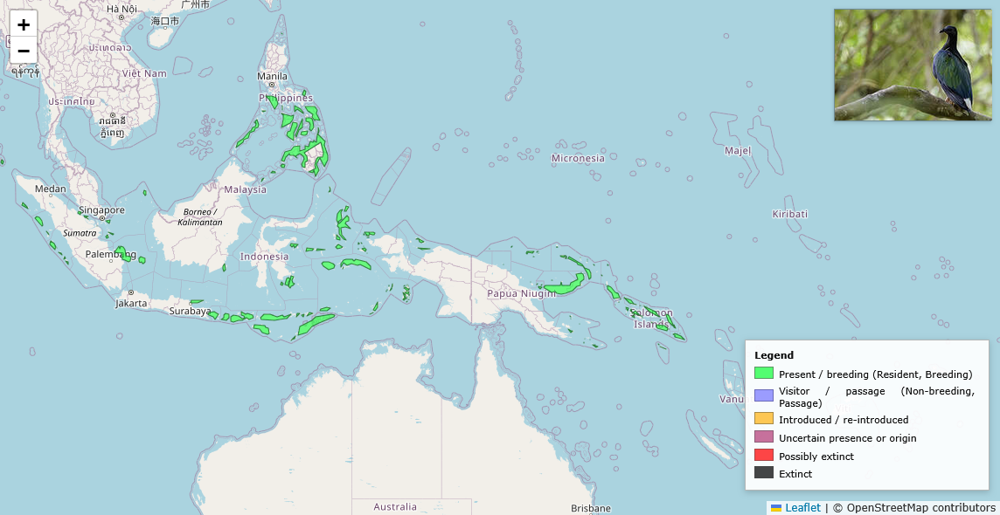

The Basics
Common Name
Nicobar Pigeon
Conservation Status:
Near Threatened[1]
Physical Profile
Their size ranges from 32 centimeters to 57 centimeters in length, and is easily distinguished by its unique coloration and distinctive plumage[2].
Habitat and Geography
They live in the tropical forests of the Nicobar Islands as well as nearby southeast Asian regions[2].


Ecology and Behavior
- They are diurnal and they fly to larger islands to feed during the day and roost on smaller islands where there's little to no predators [3]
- They are oviparous (egg-laying) their breeding region encompasses many island in southeast Asia most noatably the Andaman and Nicobar Islands.[2]
- Hunted by invasive rats and cats but also are hurt by deforestation and hunting.[4]
- They are social birds like most pigeons, but they tend to fly in single file rather than in a loose flock[2]
- Omivorous, their main diet consists of seeds, fruits, and insects. It uses a gizzard stone (a trait shared with other pigeons) to grind up hard food.[3]
Full Scientific Classification
| Taxonomic Rank | Scientific Name |
|---|---|
| Kingdom | Animalia |
| Phylum | Chordata |
| Class | Aves |
| Order | Columbiformes |
| Family | Columbidae |
| Genus | Caloenas |
| Species | Caloenas nicobarica |